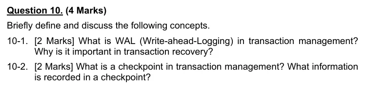
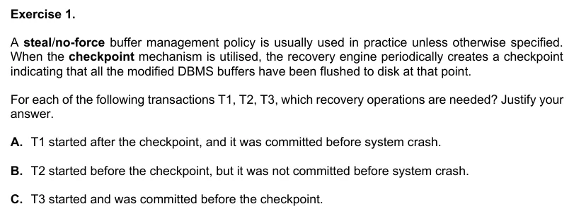
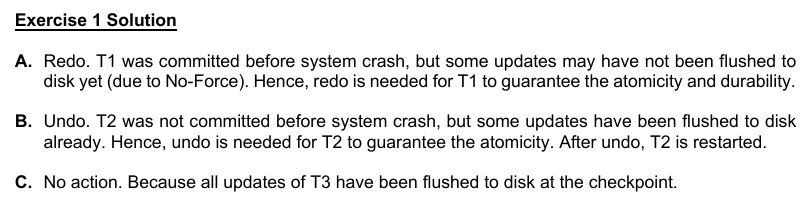
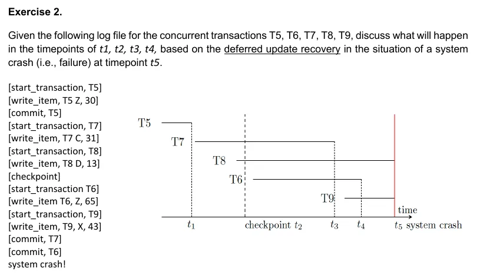
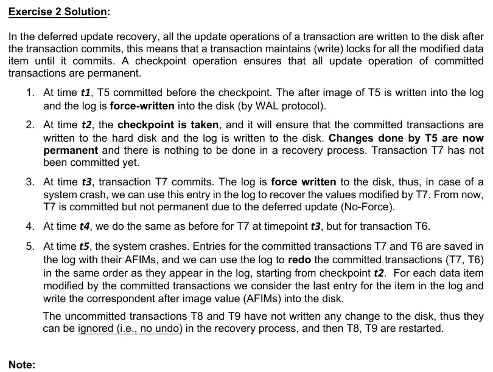
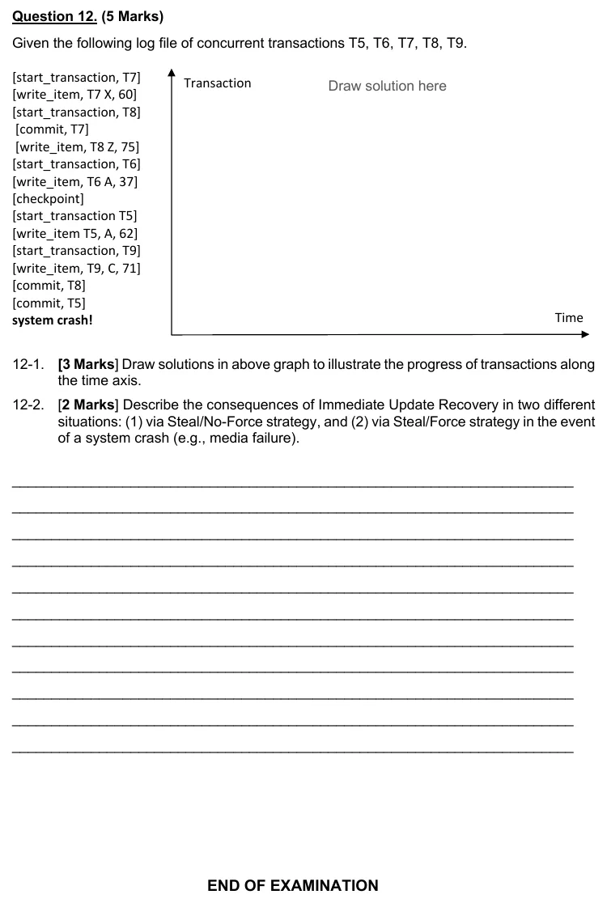
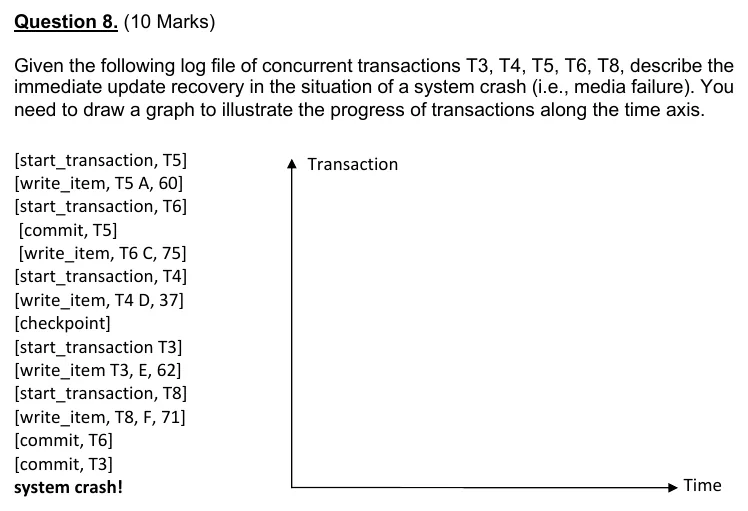

第 4 章 · WEEK 12 · DATABASE RECOVERY
Recovery：日志、checkpoint 和恢复
Week 12 整节课：系统崩溃后怎么把数据库恢复到正确状态。给一份日志，画时间线，说出谁 Undo 谁 Redo。
1 为什么需要 Recovery
很多事情会出错：断电、磁盘磁头损坏、程序出错、死锁、用户中途取消。Recovery 要保证三件事（课件第 10 页）：
- 事务 commit 了：它的修改必须永久保存，之后再出故障也不能丢。
- 事务 abort 了：它在数据库里留下的修改必须全部抹掉，读过它数据的事务受到的影响也要抹掉。
- 系统 crash 了：把数据库带回最近的一个一致状态。
对应 ACID：Recovery 负责 A（atomicity）和 D（durability）；concurrency control 负责 I；约束、trigger 和程序员负责 C。
| 故障类型 | 例子 |
|---|---|
| Transaction failure | 输入错误、deadlock |
| System failure | 程序错误、操作系统故障、内存故障。内存里的东西丢了 |
| Media failure | 磁头损坏（disk head crash）。磁盘上的东西丢了一部分 |

2 先弄清：内存和磁盘是两份
后面所有内容都建立在这个事实上：数据库的数据在磁盘上，但事务读写的是内存里的副本（buffer / cache page，一个 page 和一个磁盘 block 一样大）。
- 事务 write(X)，只是改了内存里那一页。这一页和磁盘上的不一样了，叫 dirty page。
- 把内存页写回磁盘叫 flush。什么时候 flush 由 buffer manager 决定，不一定在 commit 的时候。
- Crash 时内存全丢，磁盘上的还在。
所以 crash 之后磁盘上可能有两种错：
- 已经 commit 的事务，修改还没写到磁盘 → 要补上（Redo）。
- 没 commit 的事务，修改已经写到磁盘 → 要撤掉（Undo）。
3 备份（backup）
- Logical backup：用 SQL 脚本把数据库内容导出成文件（比如 .csv）。
- Physical backup：给数据库存一个快照，也叫 database dump，是磁盘的镜像。恢复时和 log、checkpoint 一起用。分 cold backup（停机做）和 hot backup（在线做）。
| Full backup | Differential backup | Incremental backup | |
|---|---|---|---|
| 备份什么 | 全部数据 | 上次 full 之后变过的 | 上次任何备份之后变过的 |
| 占空间 | High | Medium to High | Low |
| 备份速度 | Slowest | Fast | Fastest |
| 恢复速度 | Fastest | Fast | Slowest |
| 恢复时需要 | 最近一次 full | 最近一次 full + 最近一次 differential | 最近一次 full + 之后所有的 incremental |
Dump 和 Log 的区别：dump 是某一时刻整个数据库的拷贝，放在别处；log 是一本流水账，记录每个事务的 ID、操作、数据的 BFIM 和 AFIM，以及 checkpoint 记录。
4 Log、BFIM 和 AFIM
Log 按发生的先后顺序记录对数据库的所有修改。五种记录：
| 记录 | 含义 |
|---|---|
[start_transaction, T] | 事务 T 开始 |
[write_item, T, X, old_value, new_value] | T 把 X 从旧值改成新值 |
[read_item, T, X] | T 读了 X |
[commit, T] | T 成功完成 |
[abort, T] | T 被中止 |
- BFIM（BeFore IMage）：修改之前的旧值。Undo 用它。
- AFIM（AFter IMage）：修改之后的新值。Redo 用它。
例如 [write_item, T1, D, 10, 20]：D 的 BFIM 是 10，AFIM 是 20。
5 WAL（Write-Ahead Logging）
先写日志，后写数据。日志必须先落到磁盘上（force-write），因为 crash 之后恢复全靠它。两条规则：
- 为了能 Undo：一个数据的 AFIM 被 flush 到数据库磁盘（覆盖掉 BFIM）之前，它的 BFIM 必须已经写进 log，并且 log 已经 force-write 到磁盘。保证 Atomicity。
- 为了能 Redo：事务 commit 之前，它所有的 AFIM 必须已经写进 log，并且 log 已经 force-write 到磁盘。保证 Durability。
Commit point：事务的所有操作都成功执行，并且它们的效果都已经按 WAL 记进了 log，这时事务到达 commit point，往 log 里写一条 [commit, T]。过了这个点，它的修改就被认为是永久的。Crash 后，log 里有 start 但没有 commit 的事务需要 rollback。
AI 讲解，非官方2023 Q11-2 / 2024 Q10-1：What is WAL? Why is it important in transaction recovery?

WAL (Write-Ahead Logging) is a protocol that requires log records to be force-written to stable storage before the corresponding changes are written to the database on disk. (1) For undo: before a data item's AFIM is flushed to the database disk, its BFIM must be recorded in the log and the log force-written to disk. (2) For redo: before a transaction commits, all its AFIMs must be recorded in the log and the log force-written to disk.
It is important because after a crash the contents of main memory are lost and the log is the only source for recovery. Rule (1) guarantees that uncommitted changes can always be undone using BFIMs (atomicity). Rule (2) guarantees that committed changes can always be redone using AFIMs (durability).
6 Checkpoint
如果每次恢复都要从 log 的第一行看起，太慢。所以系统定期做 checkpoint：log 里的一条记录，表示在这个时间点，内存里所有改过的页都已经写到磁盘，数据库状态和 log 是同步的。
做 checkpoint 的四步（课件第 22 页）：
- 暂停所有事务的执行。
- 把内存里所有改过的 buffer force-write 到磁盘。
- 往 log 里写一条
[checkpoint]，并把 log force-write 到磁盘。 - 恢复事务的执行。
AI 讲解，非官方2024 Q10-2：What is a checkpoint? What information is recorded?
A checkpoint is a log record of a consistent database state at a point in time; it is a point of synchronisation between the database and the transaction log. It is taken periodically: the DBMS suspends the execution of transactions, force-writes all modified main-memory buffers to disk, writes a [checkpoint] record to the log and force-writes the log to disk, then resumes the transactions.
The [checkpoint] record is recorded in the system log (it identifies the transactions that are active at that time). Its purpose is to reduce recovery work: transactions that committed before the checkpoint need no action, so recovery only needs to scan the log from the most recent checkpoint to the crash.
没把握的地方“记录了什么信息”这一问，课件只写了 “Write a [checkpoint] record to the log”，以及 checkpoint 之后的事务被识别为 active transactions。括号里“当时活跃事务的列表”来自教材的一般说法，课件没有明写。
7 Undo 和 Redo
| Undo | Redo | |
|---|---|---|
| 对象 | 没有 commit 的事务 | 已经 commit 的事务 |
| 做什么 | 把 BFIM（旧值）写回去 | 把 AFIM（新值）再写一遍 |
| 扫描 log 的方向 | 从后往前（backward） | 从前往后（forward） |
| 保证 | Atomicity | Durability |
为什么方向不同？一个数据可能被改了好几次。Undo 要回到最早的状态，所以从最后一次修改往回退，一层层恢复，最后落在最老的 BFIM 上。Redo 要到达最新的状态，所以按原来的顺序从头重放，最后落在最新的 AFIM 上。课件的总结：Undo 从 crash 往回做到最近的 checkpoint；Redo 从最近的 checkpoint 往后做到事务 commit。
8 考试的做法：画时间线，把事务分三类
给你一份 log，按下面的步骤做：
- 画一条时间轴，标出 checkpoint 和 crash 两条竖线。
- 每个事务画一条横线，从它的 start 画到它的 commit；没有 commit 的画到 crash。线的长短以 log 里的行为准。
- 把事务分成三类：
| 类别 | 怎么认 | Immediate update （Steal / No-Force） | Deferred update （No-Steal / No-Force） |
|---|---|---|---|
| ① checkpoint 之前已 commit | commit 那一行在 [checkpoint] 上面 | 不用处理 | 不用处理 |
| ② checkpoint 之后、crash 之前 commit | commit 那一行在 [checkpoint] 下面。它什么时候 start 无所谓 | Redo | Redo |
| ③ crash 时还没 commit | log 里找不到它的 commit | Undo，然后重启 | 忽略（不用 undo），然后重启 |
课件例题（第 24、33–36 页）
下面的工具读同一份 log，画出时间线，并按所选策略给出每个事务的处理。先选 Deferred，再切到 Immediate 对比：
课件的官方答案：T1 在 checkpoint 前已 commit，不处理。T3、T2 在 checkpoint 后 commit，Redo。T4、T5 没有 commit：deferred update 下忽略它们的修改并重启；immediate update 下 Undo（从后往前：先把 C 恢复成 15，再把 A 恢复成 15），然后重启。工具的输出和这些一致。
细化讲解
注意 T3：它在 checkpoint 之前就开始了，也在之前写了 B，但它的 commit 在 checkpoint 之后，所以属于第 ② 类。分类只看 commit 的位置。课件第 36 页补充了一个细节：T3 对 B 的修改发生在 checkpoint 之前，那一次修改已经随 checkpoint 写到磁盘，所以 redo 时可以跳过它；T2 则要把 D 设成 15（它的 AFIM）。
说明课件第 36 页的文字里写 “redo their changes … (for Steal/Force strategy)”，而第 28、35 页都写 Steal/Force 对应 Undo/No-Redo。我认为第 36 页括号里应该是 Steal/No-Force。答题按第 28 页的四种对应来写。
9 Steal / No-Steal，Force / No-Force
这两对词说的是 dirty page 什么时候写回磁盘：
- Steal：事务还没 commit，它改过的页就可以被写到磁盘（比如内存满了要腾地方）。→ 磁盘上可能有未提交的修改 → 需要 Undo。
- No-Steal：事务 commit 之前，它改过的页不能写到磁盘。→ 不需要 Undo。代价是需要很大的内存。
- Force：事务 commit 时，它改过的页立刻全部写到磁盘。→ 已提交的修改一定在磁盘上 → 不需要 Redo。代价是 I/O 开销大。
- No-Force：commit 时不强制写，等以后（checkpoint 或被 steal 时）再写。→ 需要 Redo。
| No-Steal | Steal | |
|---|---|---|
| Force | No-Undo / No-Redo 最简单，但不实用 | Undo / No-Redo Immediate update 的一种 |
| No-Force | No-Undo / Redo Deferred update | Undo / Redo Immediate update，实际系统最常用 |
10 恢复技术：Deferred Update 和 Immediate Update
Deferred update（No-Steal / No-Force，No-Undo / Redo）
- 事务到达 commit point 之前，不把修改写进数据库。
- 所以没提交的事务在磁盘上没留下任何东西：不需要 Undo，也不会有 cascading rollback。
- 恢复时：Redo 最近一次 checkpoint 之后 commit 的事务；没 commit 的事务忽略并重启。
Immediate update（Steal，配 Force 或 No-Force）
- log 写好之后就马上更新数据库的 buffer，buffer 随时可能被写到磁盘。
- 恢复时：没 commit 的事务都要 Undo（用 BFIM）；已 commit 的事务在 No-Force 下要 Redo（用 AFIM），在 Force 下不用 Redo。
细化讲解
另外两种技术（了解）
Shadow paging：事务执行期间维护两张页表，current 和 shadow。Shadow 页表不改动，用于恢复；事务完成时 current 页表变成新的 shadow。
Accelerated Database Recovery（ADR）：SQL Server 的技术。不管有多少活跃事务、事务多大，恢复都很快而且一致；事务回滚是即时的。它是为长时间运行的事务提高可用性而设计的。
11 核心例题：Tutorial 12
Exercise 1

官方答案Tutorial 12 Exercise 1 Solution

讲解：这三问正好是第 8 节的三类。A 是第 ② 类：已 commit，但因为 No-Force，修改可能还没写到磁盘，所以 Redo。B 是第 ③ 类：没 commit，但因为 Steal，部分修改可能已经写到磁盘，所以 Undo，然后重启。C 是第 ① 类：checkpoint 时已经全部写到磁盘，不用处理。
Exercise 2

官方答案Tutorial 12 Exercise 2 Solution

用工具核对：
T5 在 checkpoint 前 commit，不处理。T7、T6 在 checkpoint 后 commit，按它们在 log 里的顺序 Redo（T7，然后 T6）。T8、T9 没 commit，deferred update 下没有往磁盘写过东西，忽略并重启。把策略切到 Immediate，可以看到官方答案最后那条 Note：T8、T9 变成 Undo。
12 真题：同一份 log 考了三年

2024 Q11 和 2025 Q12 的 log 一模一样，只是问的策略不同：2024 年问 Deferred（No-Steal / No-Force），2025 年问 Immediate 的两种（Steal / No-Force 和 Steal / Force）。
AI 讲解，非官方12-1 时间线，12-2 两种策略
分类（工具按课件规则生成）：
- T7：checkpoint 前已 commit → 不处理。
- T8：checkpoint 前开始，checkpoint 后 commit → 第 ② 类。
- T5：checkpoint 后开始并 commit → 第 ② 类。
- T6：checkpoint 前开始，一直没 commit → 第 ③ 类。
- T9：checkpoint 后开始，没 commit → 第 ③ 类。
(1) Steal / No-Force（Undo / Redo）：
T7 committed before the checkpoint, so its updates are already on disk: no action. T6 and T9 had not committed at the crash; because of Steal, some of their updates may have been flushed to disk, so they are undone using BFIMs, scanning the log backward (T9 first, then T6), and then restarted. T8 and T5 committed after the checkpoint; because of No-Force, their updates may not have been flushed to disk, so they are redone using AFIMs, scanning the log forward (T8, then T5).
(2) Steal / Force（Undo / No-Redo）：
T6 and T9 are still undone (backward) and restarted, because Steal may have written their uncommitted updates to disk. T8 and T5 need no redo: under Force, all their updated pages were flushed to disk when they committed. T7 needs no action.
2024 Q11-2（Deferred，No-Steal / No-Force）：
T7: no action. T8 and T5 committed after the checkpoint and are redone from the log in the order they committed (T8, then T5), because No-Force means their AFIMs may not be on disk. T6 and T9 had not committed; under No-Steal none of their updates were written to disk, so no undo is needed: they are ignored and restarted.
在工具上方把策略切到 Steal / Force 或 Deferred，可以看到对应的表。
细化讲解

AI 讲解，非官方2023 Q8
结构和 2024、2025 年的 log 相同，只是换了编号：T5 不处理；T6、T3 Redo（从前往后）；T8、T4 Undo（从后往前：先 T8 后 T4），然后重启。题目只说 immediate update，没有说 Force 还是 No-Force。稳妥的写法是按 Steal / No-Force（Undo / Redo）作答，再补一句：如果是 Steal / Force，则 T6、T3 不需要 Redo。
13 进阶变式题
答案由本页工具的程序生成。程序先用课件第 33–36 页的例题和 Tutorial 12 Exercise 2 的官方答案核对过。
变式 1 两个 checkpoint
[start_transaction, T1] [write_item, T1, A, 5, 8] [start_transaction, T2] [checkpoint] [write_item, T2, B, 1, 2] [commit, T1] [start_transaction, T3] [write_item, T3, C, 7, 9] [checkpoint] [commit, T2] [start_transaction, T4] [write_item, T4, A, 8, 3] [write_item, T3, D, 4, 6] [commit, T4] system crash!
分别按 Deferred、Steal / No-Force、Steal / Force 说明每个事务的处理。
程序生成的答案变式 1
只看最后一个 checkpoint。T1 在两个 checkpoint 之间 commit，对最后一个 checkpoint 来说属于“之前已 commit”，不处理。T2、T4 在最后一个 checkpoint 之后 commit。T3 没 commit。
- Deferred：Redo T2、T4；T3 忽略并重启。
- Steal / No-Force：Undo T3（它改了 C 和 D，从后往前：D 恢复成 4，C 恢复成 7）；Redo T2、T4。
- Steal / Force：只 Undo T3，没有 Redo。
细化讲解
变式 2 checkpoint 之后没有任何 commit
[start_transaction, T10] [write_item, T10, P, 1, 2] [start_transaction, T11] [write_item, T11, Q, 3, 4] [commit, T10] [start_transaction, T12] [write_item, T12, R, 5, 6] [commit, T11] [checkpoint] [start_transaction, T13] [write_item, T13, P, 2, 9] [write_item, T12, Q, 4, 0] system crash!
三种策略下各需要做什么？恢复后 P、Q、R 的值是多少？
程序生成的答案变式 2（最后的数值是手工推导）
T10、T11 都在 checkpoint 前 commit，不处理。没有需要 Redo 的事务。T12、T13 没 commit：Deferred 下忽略并重启；两种 Steal 策略下都要 Undo，顺序从后往前是 T13、T12。
Undo 按 log 从后往前逐条做：Q 恢复成 4（T12 的第二次写），P 恢复成 2（T13），R 恢复成 5（T12 在 checkpoint 之前的那次写也要撤，因为 T12 整个事务没 commit）。恢复后 P = 2，Q = 4，R = 5，正好是只有 T10、T11 生效的状态。
切换到“细化讲解”可以看到变式 2 和 2023 Q8。
自己试：Recovery 工具
可以改 log 再分析。每行一条记录。
14 本章小结
- Undo 用 BFIM，保证 Atomicity，从 crash 往回做；Redo 用 AFIM，保证 Durability，从 checkpoint 往后做。
- 没 commit 的事务的 dirty page 已经写到磁盘（Steal）→ 需要 Undo。已 commit 的事务还没写到磁盘（No-Force）→ 需要 Redo。
- WAL：BFIM 和 AFIM 先 force-write 到 log。
- Checkpoint：暂停事务，把 buffer 写到磁盘，在 log 里记一条，再恢复事务。
- 备份有三种：full、differential、incremental。
15 小测
键盘：← → 在小节之间翻页。